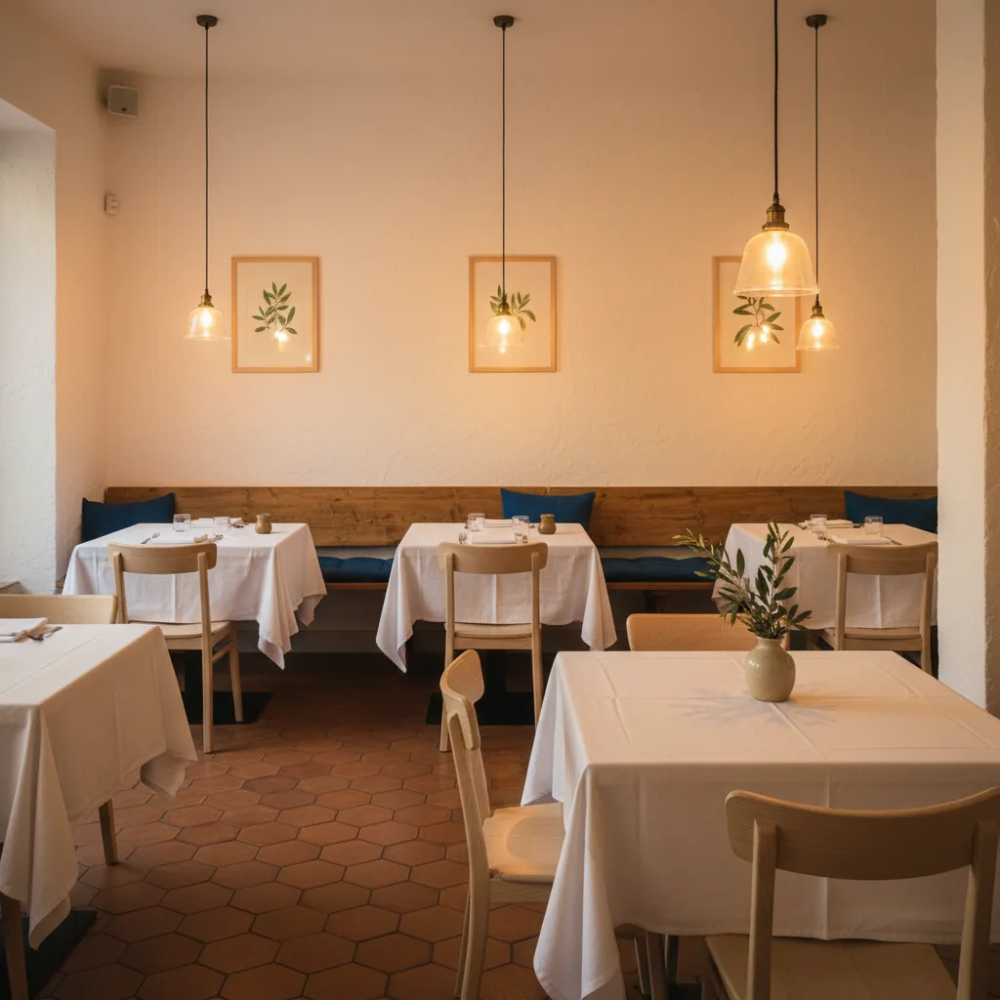
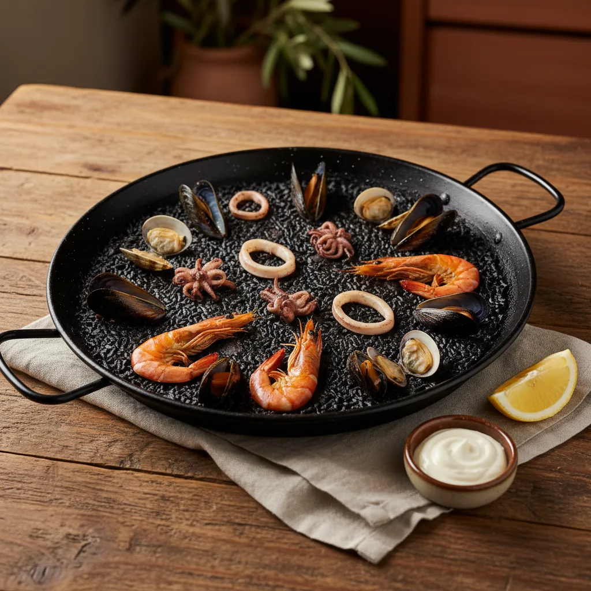
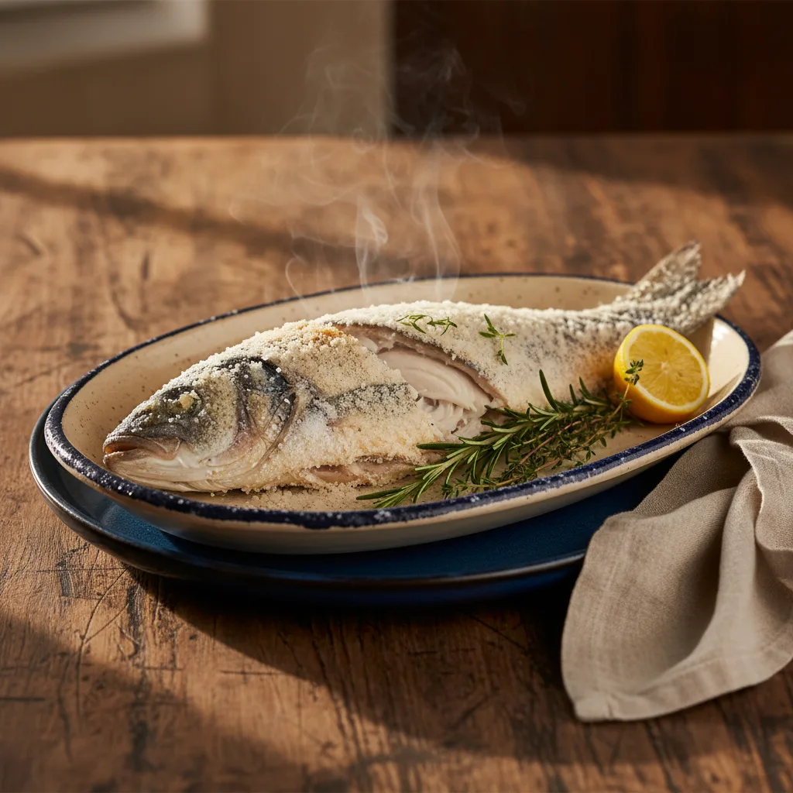
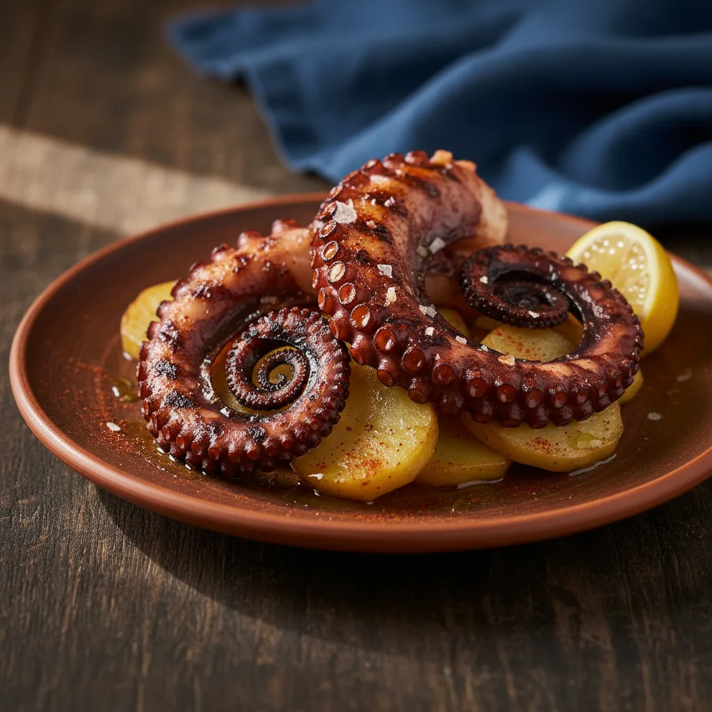
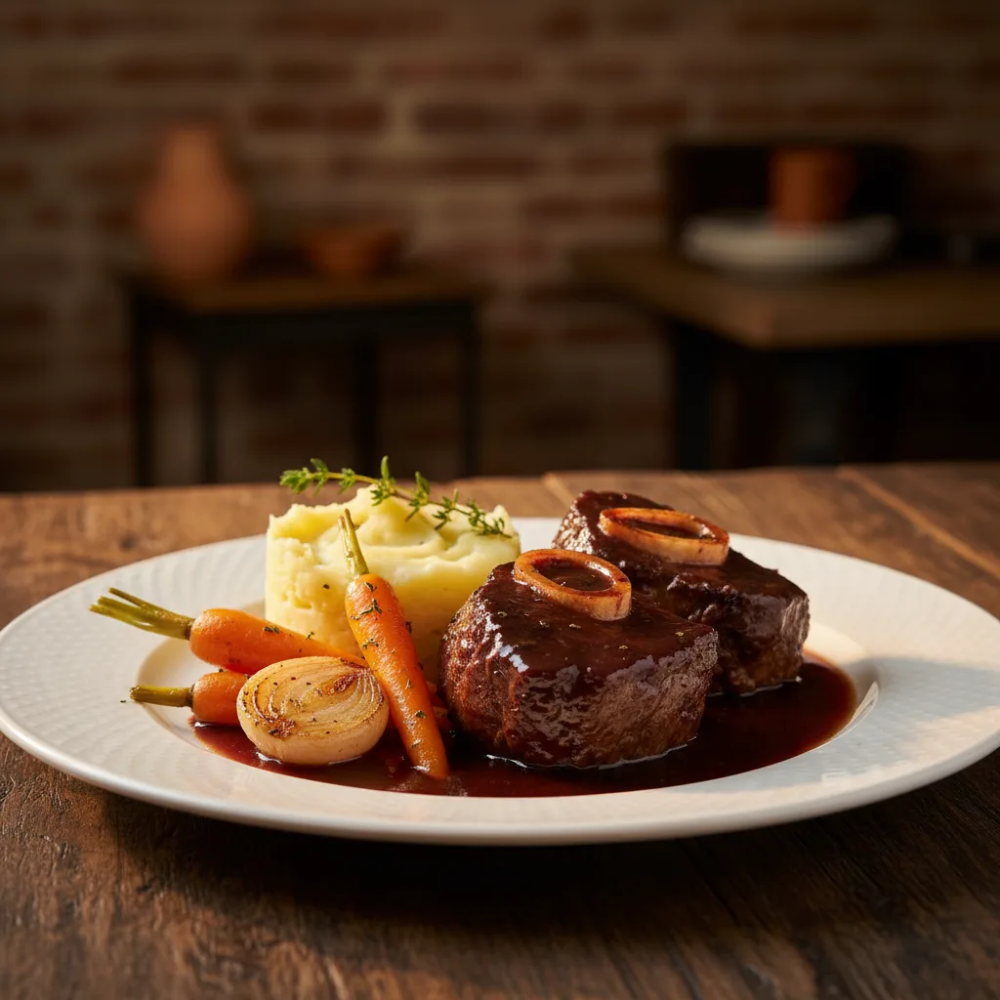
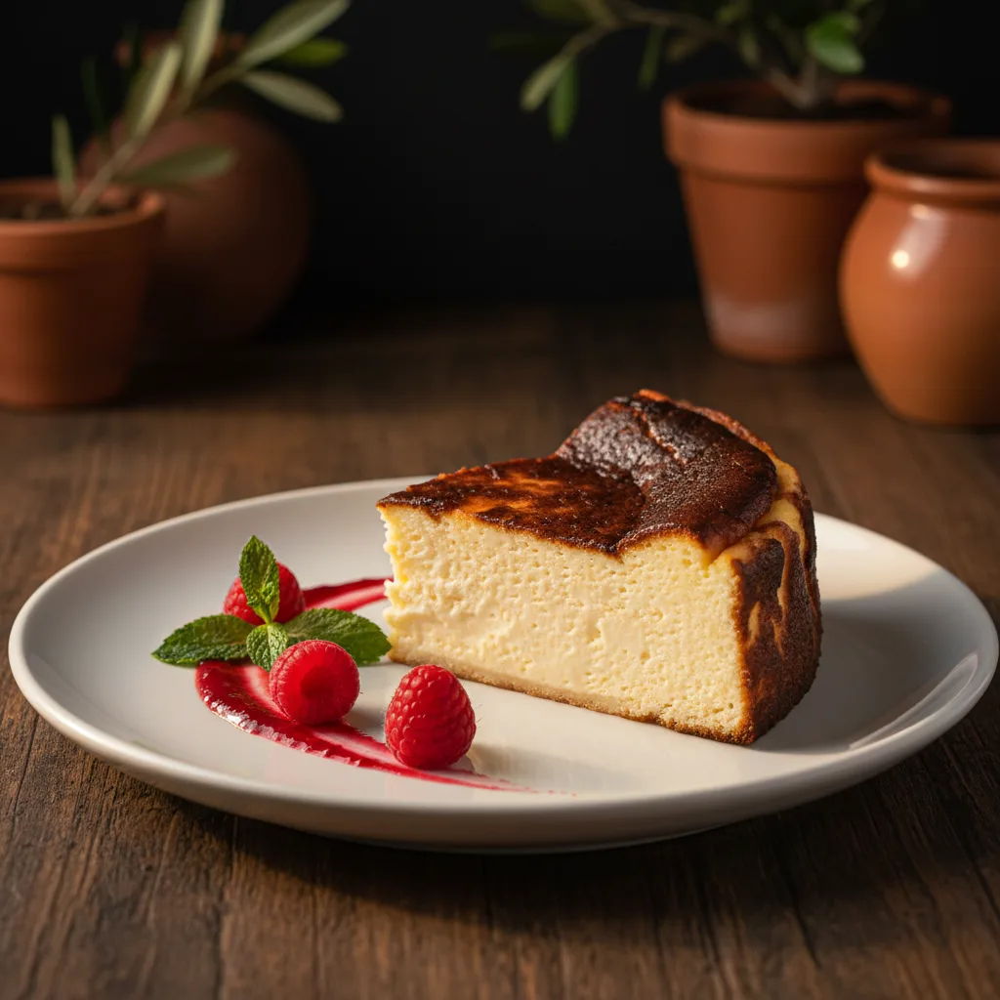

★★★★★
“Un sitio muy agradable, con trato excepcional. La comida de una calidad muy buena.”
Santi Mira · Tripadvisor · 2019
Calpe · Edificio Apolo VII
Lo mediterráneo del lugar, con guiños del norte de Europa y notas del sur asiático. Arroces, pescados, coquilles, carrilladas y un curry de langostino. Una sola mesa.


La cocina
Arroces alicantinos, pescados del mercado y carnes a la brasa. Conviven con coquilles, kaastaart y un curry korma de langostino. Sin teatro: cada plato hace lo suyo.
Arroz del señorito, paellas, lubina al horno de sal, pulpo a la brasa, carrilladas al vino. La base de la casa.
Coquilles scampi (vieiras), pollo en salsa de mostaza, kaastaart de postre. Recetas del norte hechas con producto local.
Langostino korma. Curry suave de inspiración india, con coco y especias. Un único plato, pero entero.
Lo que recuerdan
Recogidas de Tripadvisor y otras plataformas públicas. Sin retoques.
“The best lubina en sal I have had on my plate in Calpe in twenty years.”
— La mejor lubina al horno de sal que he probado en Calpe en veinte años.
Tripadvisor · reseña de viajero internacional
★★★★★
“Un sitio muy agradable, con trato excepcional. La comida de una calidad muy buena.”
Santi Mira · Tripadvisor · 2019
★★★★★
“El tartar de atún buenísimo y las vieiras con gambas y salsa de azafrán una delicia.”
Ramon M · Tripadvisor · 2019
★★★★★
“La fideuá es increíble y la ensalada de cabra y tomate se derrite el queso.”
Martita123 · Tripadvisor · 2018
Distinción de Tripadvisor a los restaurantes mejor valorados de forma consistente por sus viajeros. Insignia activa en el perfil oficial.
Fuente · TripadvisorLa carta
Ocho platos de la carta actual: mediterráneos, belgas y un curry. La paella señoret es el ancla a 15 € por persona; el resto figura en la carta física, que cambia con la temporada.

Pescado entero a la sal gruesa, abierto en mesa. Aceite de oliva virgen extra y limón.
Arroz con marisco pelado, fondo de pescado y azafrán. Para comer sin trabajo. Mínimo dos personas.
Arroz con tinta de calamar, sepia y marisco. Allioli casero aparte. Mínimo dos personas.

Vieiras con gambas y salsa de azafrán. Clásico de la cocina belga, hecho con producto del Mediterráneo.

Mejillas de ternera braseadas a fuego lento en reducción de vino tinto. Patata y verdura de temporada.
Pechuga sellada con salsa cremosa de mostaza, una de las recetas más reconocibles del recetario belga.
Curry suave de inspiración india, leche de coco y especias. La única nota oriental de la carta y va en serio.

Tarta de queso de tradición flamenca. Más densa que la española, menos dulce. El postre que el habitual ya no se cuestiona.
Pieza entera del día. Sal gruesa, horno fuerte. Nada más.
Se abre delante del comensal. Aceite de oliva virgen y limón al servir.
"La mejor lubina al horno de sal que he probado en Calpe en veinte años."
Carta completa con más arroces, pescados, carnes y postres en sala. Menú del día 16–20 € al mediodía.
Paella señoret 15 € por persona. Algunos precios verificados en reseñas y carta.menu; IVA incluido. Resto: consultar al equipo de sala.
Reconocimiento
Cuatro indicadores públicos, todos verificables en su fuente original.
El sitio
Comedor del cluster gastronómico de Apolo VII. Mesas vestidas, luz cálida, sobremesa larga.
Imágenes referenciales generadas para la propuesta de diseño. La fotografía definitiva se realizará con sesión profesional en el local.
Reservas
El comedor es pequeño y las noches del fin de semana se llenan. Recomendamos reservar con antelación.
Cómo llegar
En el Edificio Apolo VII, en plena calle Pintor Sorolla. A pie de calle, zona azul próxima.
Calle Pintor Sorolla
Edificio Apolo VII · Local 5A
03710 Calpe · Alicante
Cluster gastronómico de Apolo VII
Miércoles cerrado.
Teléfono · +34 965 06 43 69
Reservas también por WhatsApp y formulario web.
{kind=link}
{kind=link}
{kind=link}
{kind=link}